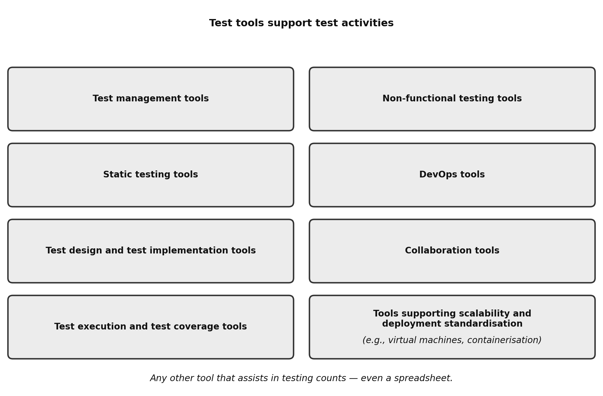

Chapter 6 — Test Tools
Learning objectives: 2 · K1 1 / K2 1 / K3 0 · Exam questions from this chapter: 2
Keywords: test automation
This is the shortest chapter of the ISTQB® Foundation Level syllabus. The two questions you will meet on the exam rest entirely on two short, defined lists: the first asks you to match a test tool to the test activity it supports (K2), and the second asks you to tell a legitimate benefit or risk of test automation from the options (K1). The good news is that, with one careful reading and the practice questions at the end, this chapter is usually one of the easier opportunities to gain points in the exam.
6.1 Tool Support for Testing
Types of test tool and how they support testing (FL-6.1.1 — K2)
Software test tools support and ease many test activities, with the aim of making the test process more efficient, faster, and more accurate. The syllabus names eight types of tool by what they help with, and then closes the list with a catch-all for any other tool that assists in testing. It also presents the eight as examples rather than a closed set. In other words, the list tells you how to think about a tool, which is by the test activity it supports, and the catch-all makes sure nothing that genuinely helps testing falls outside it. Figure 6.1 shows the eight named types side by side, with the catch-all underneath.

Test management tools increase the efficiency of the test process by helping the team manage the SDLC, requirements, tests, defects, and configuration. In practical terms, this is the place where traceability between requirements, test cases, and defect reports is kept, and where test progress reports come from.
Static testing tools support the tester in performing reviews and static analysis. Neither activity executes the test object. For example, one tool may help reviewers record and track their comments on a requirements document, while another scans source code for violations of coding standards.
Test design and test implementation tools facilitate the generation of test cases, test data, and test procedures. For instance, a tool may produce a large set of valid and invalid input records from a data model, which would take a person days to prepare by hand.
Test execution and test coverage tools facilitate automated test execution and coverage measurement. The two often go together in practice, because the same automated run that executes the tests can also report which statements or branches of the code it exercised.
Non-functional testing tools allow the tester to perform non-functional testing that is difficult or impossible to perform manually. A load test with 10,000 concurrent virtual users is the usual example. No team could produce that load by hand, but a tool can generate it and measure the response times under it.
DevOps tools support the DevOps delivery pipeline, workflow tracking, automated build processes, and continuous integration and continuous delivery (CI/CD). Their link to testing is that automated tests run inside that pipeline whenever the code changes, which is one of the practices you met in Chapter 2.
Collaboration tools facilitate communication. This includes the day-to-day exchange between different roles on a team, such as business analysts, developers, and testers, who need to share questions, decisions, and test results without delay.
Tools supporting scalability and deployment standardisation include virtual machines and containerisation tools. They let the team create standard test environments on demand. As a result, the same environment can be set up again for every test run, or several identical copies can run in parallel.
Finally, the syllabus adds any other tool that assists in testing. Its own example is a spreadsheet: in the context of testing, a spreadsheet used to track test cases or to prepare test data is a test tool. Put differently, what makes software a test tool is the use it is put to, not its price, its licence, or what it is called.
Table 6.1 — Test tool types and what they support
| Tool type | What it supports |
|---|---|
| Test management tools | Managing the SDLC, requirements, tests, defects, and configuration; traceability and progress reporting |
| Static testing tools | Reviews and static analysis, without executing the test object |
| Test design and test implementation tools | Generating test cases, test data, and test procedures |
| Test execution and test coverage tools | Running automated tests and measuring coverage |
| Non-functional testing tools | Non-functional testing that is difficult or impossible manually, such as load testing |
| DevOps tools | The delivery pipeline, workflow tracking, automated builds, and CI/CD, in which automated tests run |
| Collaboration tools | Communication within and between teams |
| Tools supporting scalability and deployment standardisation | Standard environments on demand, such as virtual machines and containers |
| Any other tool that assists in testing | Whatever helps testing in context, even a spreadsheet |
In practice. A mid-sized agile product team’s daily toolkit maps onto this list. The team uses an issue tracker such as Jira, extended for test management, to keep bidirectional traceability between requirements and test cases and to record defect reports. SonarQube running on every commit is a static analysis tool. Selenium or Playwright running the regression suite is a test execution tool, while JaCoCo, which measures how much of the Java code and its branches the tests exercised, is a coverage tool. JMeter loading the system before go-live is a non-functional testing tool, and Jenkins automating the flow end to end is a DevOps tool.
Exam focus. The K2 question on this objective asks you to connect tool types with the test activities they support, and it usually takes one of three forms. It may describe a tool, or a feature of one, and ask which activity or category it supports; for example, the answer to “Which type of tool manages requirements, tracks defects, and reports progress?” is a test management tool. It may give a list of descriptions and a list of categories and ask you to match them. It may also turn the question around, name one activity, and ask which categories support it. In that form, more than one category can be correct, because several tool types run tests as part of their job. Keep the catch-all in mind as well: the syllabus states that “a spreadsheet is a test tool in the context of testing”, so an option claiming that only dedicated or licensed software counts is wrong.
The thing to watch out for is a distractor that moves a tool into a neighbouring category. A static analysis tool, for example, may be offered as a non-functional testing tool, or a coverage tool as a test management tool, because both pairs sound related. Do not match the tool by how technical it sounds. Ask which test activity it supports and what it works on, and then pick the category in Table 6.1 that names that activity.
Check your understanding
CYU 6.1.1-a. Before each nightly test run, a team starts several identical, isolated copies of the test environment from the same container image and removes them when the run ends. Which type of test tool supports this?
- (a) Test management tools
- (b) Collaboration tools
- (c) Tools supporting scalability and deployment standardisation
- (d) Static testing tools
Answer: (c). Virtual machines and containerisation tools are the syllabus’s examples of tools supporting scalability and deployment standardisation; they create standard test environments on demand. Test management tools manage tests, defects, and traceability, collaboration tools support communication, and static testing tools support reviews and static analysis, so none of them provides the environments.
CYU 6.1.1-b. According to the ISTQB® syllabus, which of the following statements about tool use is correct?
- (a) Even an ordinary spreadsheet counts as a test tool when it is used in testing, for example to track test cases or test data
- (b) Only licensed commercial automation software can be classed as a test tool
- (c) Code compilers and debugging tools form the main backbone of test management tools
- (d) Static analysis tools, which scan code without running it, are non-functional testing tools
Answer: (a). The syllabus closes its list of tool types with any other tool that assists in testing and states that a spreadsheet is a test tool in the context of testing. Option (b) contradicts this, because the use a tool is put to matters, not its licence. Option (c) confuses development tools with test management tools, and option (d) places a static testing tool in the wrong category.
CYU 6.1.1-c. A tool checks the team’s source code against its coding standards and reports every violation, without running the code. Which type of test tool is this?
- (a) Test execution and test coverage tools
- (b) Non-functional testing tools
- (c) DevOps tools
- (d) Static testing tools
Answer: (d). Checking code against coding standards without executing it is static analysis, which static testing tools support. Test execution and test coverage tools run tests and measure coverage, non-functional testing tools perform tests such as load tests that are hard to do manually, and DevOps tools run the delivery pipeline in which such a check may be started.
6.2 Benefits and Risks of Test Automation
The benefits and risks of test automation (FL-6.2.1 — K1)
Test automation, the only keyword of this chapter, is wider than its name suggests. The ISTQB® glossary defines it as the use of software to perform or support test activities, such as test management, test design, test execution, and results checking. In other words, test automation covers more than running automated tests; using a tool to manage or design tests counts as well.
The syllabus opens this topic with an important warning: simply acquiring a tool does not guarantee success. Each new tool needs effort before it gives real and lasting benefits. Put differently, the tool has to be introduced, the team trained, and the test scripts maintained.
The syllabus lists six potential benefits of test automation:
- Time is saved by reducing repetitive manual work, such as executing regression tests, re-entering the same test data, comparing expected results with actual results, and checking code against coding standards.
- Simple human errors are prevented through greater consistency and repeatability. For example, tests are derived from requirements in a consistent way, test data is created systematically, and a tool executes the tests in the same order with the same frequency.
- Assessment becomes more objective, for example of coverage, and the tool can provide measures that are too complicated for people to determine.
- Information about testing becomes easier to access, which supports test management and test reporting with statistics, graphs, and aggregated data on test progress, failure rates, and test execution duration.
- Test execution times are reduced, which gives earlier defect detection, faster feedback, and a faster time to market.
- Testers gain more time to design new, deeper, and more effective tests.
The syllabus also lists eight potential risks, which need analysis and mitigation:
- Expectations about the benefits of the tool, including its functionality and ease of use, may be unrealistic.
- The time, cost, and effort needed to introduce the tool, maintain the test scripts, and change the existing manual test process may be estimated inaccurately.
- A test tool may be used where manual testing is more appropriate.
- The team may rely on the tool too much, for example by ignoring the need for human critical thinking.
- The team depends on the tool vendor, which may go out of business, retire the tool, sell it to a different vendor, or provide poor support for queries, upgrades, and defect fixes.
- Open-source software may be abandoned, so that no further updates are available, or its internal components may need quite frequent updates as it develops further.
- The automation tool may not be compatible with the development platform.
- The chosen tool may be unsuitable because it does not comply with the applicable regulatory requirements or safety standards.
In practice. A test team starts a big automation project to eliminate a 400-test-case, two-day manual regression load each release. At first everything goes well; tests run automatically and green reports appear. However, by the sixth month, a broad redesign of the software’s user interface breaks 180 automated test cases. Because the team ignored the regular maintenance effort of the automation code in its planning, the testers now have to spend their time repairing scripts instead of testing new features. As a result, the automation slows the team down instead of speeding it up. This is the syllabus risk of inaccurate estimates of the effort needed to maintain test scripts.
Exam focus. Questions on this objective are K1 recall: you pick the option that is a benefit, or the one that is a risk. The distractors usually take one of three forms. The first exaggerates a benefit into a guarantee or denies a real risk, such as “removes the need for manual testing” or “once written, automated scripts need no further maintenance”. The second keeps the words of a listed item but reverses its direction or widens its scope, for example “less time for testers to design new tests” or “prevents all errors in the test object”. The third offers a real benefit when the question asks for a risk, or a real risk when it asks for a benefit.
Do not ask whether an option sounds positive. Ask whether the syllabus lists it as a benefit, as a risk, or not at all, and then check that its wording matches the listed item. Table 6.2 sets each real benefit and the most common risks next to the distractor version you are likely to meet.
Table 6.2 — Real benefits and risks of test automation versus their distractor versions
| What the syllabus says | Distractor version in the exam | Why the distractor fails |
|---|---|---|
| Benefit: time saved by reducing repetitive manual work | “Automation removes the need for manual testing.” | Using a tool where manual testing is more appropriate is a listed risk. |
| Benefit: fewer simple human errors through consistency and repeatability | “Automation removes the need for human critical thinking.” | Ignoring human critical thinking is the over-reliance risk. |
| Benefit: more objective assessment, such as coverage | “Automation guarantees that the software is defect-free.” | Testing shows the presence of defects, not their absence (Chapter 1). |
| Benefit: easier access to test information for management and reporting | “The tool’s dashboard decides when to release.” | The information supports people’s decisions; it does not replace them. |
| Benefit: shorter execution times, earlier defect detection, faster feedback | “Automated tests always find more defects than human testers.” | The benefit is speed, not a guaranteed higher defect count. |
| Benefit: more time for testers to design new, deeper tests | “Testers are no longer needed once the tests are automated.” | The time is freed for testers, not taken away from them. |
| Risk: inaccurate estimates of the time, cost, and effort to introduce a tool, maintain test scripts, and change the existing manual test process | “Once written, automated scripts need no further maintenance.” | Script maintenance is an ongoing cost that teams often underestimate. |
| Opening warning: simply acquiring a tool does not guarantee success | “A well-known commercial tool removes the automation risks.” | Vendor dependency is itself a listed risk. |
| Risk: an open-source tool may be abandoned or need frequent updates | “An open-source tool carries no dependency risk because there is no vendor.” | The dependency moves to the open-source project and its developers. |
Check your understanding
CYU 6.2.1-a. Which of the following is a potential benefit of test automation?
- (a) Test scripts that keep working without maintenance when the user interface changes
- (b) Less dependence on the tool vendor for upgrades and defect fixes
- (c) Release decisions taken by the tool, based on its dashboard, instead of by people
- (d) Easier access to information about testing, such as statistics on test progress and failure rates
Answer: (d). The syllabus lists easier access to information about testing, such as statistics, graphs, and aggregated data on test progress, failure rates, and execution duration, as a benefit. Option (a) denies the script-maintenance effort that the syllabus names as a risk, and option (b) reverses the listed risk of dependency on the tool vendor. Option (c) turns information that supports people’s decisions into the decision itself, which is the over-reliance risk.
CYU 6.2.1-b. Which of the following is a risk of test automation according to the syllabus?
- (a) Over-reliance on the tool and its automatic green reports, ignoring the human need for intuitive and critical thinking
- (b) Evaluating coverage ratios far more objectively than by eye
- (c) Saving the team serious time on monotonous, repetitive manual data-entry steps
- (d) Freeing testers from routine load so they can design more creative test cases
Answer: (a). Relying on a tool too much, for example by ignoring the need for human critical thinking, is a risk the syllabus lists. The tool only executes the steps written for it and cannot judge the results as a person does. Options (b), (c), and (d) are benefits.
CYU 6.2.1-c. “Buying and installing a globally recognised, powerful, expensive commercial test-automation tool removes all the automation risks and process bottlenecks in a project entirely.” What is true of this claim?
- (a) It is certainly true, because commercial enterprise software isolates projects from every risk by nature
- (b) It is false; simply acquiring a tool does not guarantee success, and each new tool needs effort for introduction, maintenance, and training
- (c) It is true; risks arise only when free open-source libraries are used
- (d) It is false, because no commercially sold test tool has any ability to find defects in dynamic code
Answer: (b). The syllabus opens Section 6.2 with this warning: simply acquiring a tool does not guarantee success, and each new tool needs effort for introduction, maintenance, and training before it gives real and lasting benefits.
Chapter 6 summary
| Learning objective | One-sentence summary |
|---|---|
| 6.1.1 (K2) | The syllabus names eight tool types and a catch-all: test management tools coordinate the testing, test execution and test coverage tools run tests and measure coverage, and even a spreadsheet used in testing is a test tool. |
| 6.2.1 (K1) | Potential benefits include time saved, fewer simple human errors, more objective assessment, easier access to test information, faster feedback, and more time for testers to design better tests. Potential risks include unrealistic expectations, inaccurate effort estimates, over-reliance on the tool, dependency on the tool vendor, and open-source software that may be abandoned. |
Critical concept pairs often confused
| This concept | is | not this concept | which is |
|---|---|---|---|
| Test execution tool | runs the automated tests and records their results | Test management tool | stores requirements, tests, and defect reports and keeps the traceability between them |
| Benefit: preventing simple human errors | the same steps run the same way every time, so slips such as typos or skipped steps do not occur | Risk: over-reliance on the tool | trusting the tool’s results without human critical thinking, so problems the scripts do not check go unnoticed |
| Acquisition | buying or downloading a test tool | Success | real and lasting benefit, which needs effort for tool introduction, training, and maintenance |
Exam tips and common traps — Chapter 6
For tool-classification questions, focus on the tool’s purpose in the project and what it operates on. If it stores work products and links defect reports, choose management; if it supports reviews or analyses a work product without executing it, choose static; if it runs test steps and measures coverage, choose execution and coverage. For automation benefit/risk questions, be very sceptical of sharp, exaggerated words in the options (such as “removes entirely,” “guarantees 100 percent quality,” “leaves no need for a human”); such options are almost always wrong. Also look for an option that reverses one word of a listed item, and for a benefit offered as a risk or a risk offered as a benefit.
For time management, this chapter’s questions are pure knowledge and comprehension, so they can be solved very quickly, in 30 to 45 seconds; the time you save here can be handed confidently to the K3 questions from Chapters 4 and 5.
Cumulative retrieval
Revisiting earlier chapters through this chapter’s lens: name whether a load-testing tool supports functional or non-functional testing (Chapter 2); decide whether “over-reliance on automation’s green reports” echoes the first principle (testing shows presence, not absence, of defects) from Chapter 1; and decide whether running a security-scanning tool on every build is risk mitigation, risk acceptance, risk transfer, or a contingency plan (Chapter 5). As the final chapter, this set can be the broadest cross-cutting review.
Chapter exercises
Answers, rationale, and learning-objective references are in the “Answers & Rationale” section at the end of the book.
PB-C6-001. A test team wants to store customers’ business requirements centrally, link the prepared test cases back to those requirement items, track defects found in system testing instantly, and report the release’s test-run progress to senior management with metric dashboards. Which tool type best supports this whole set of activities?
- (a) Test execution and test coverage tools
- (b) Test management tools
- (c) Static testing tools
- (d) DevOps tools
PB-C6-002. Which of the following is a possible, legitimate benefit of bringing tool support and automation into an organisation’s test process?
- (a) Automation scripts, once written, removing the future need for all test-code maintenance and updates entirely
- (b) Human experts’ analytical and critical thinking no longer being needed at all during test runs and analysis
- (c) Reduced test execution times for repetitive regression tests, which gives the team earlier defect detection and faster feedback
- (d) The chosen enterprise test tool alone legally guaranteeing full compliance with sector regulations and strict standards
PB-C6-003. A development team has built the whole project’s critical regression-testing strategy on a free open-source automation library maintained by a single volunteer developer. Which test-automation risk does this most directly expose?
- (a) The open-source library being abandoned, so that no further updates are available
- (b) Stubbornly using an automation tool in an area far better suited to manual testing
- (c) Unrealistic expectations arising at management level about the tool’s technical power
- (d) Coverage ratios being evaluated far more objectively than by eye
PB-C6-004. A test team uses a tool that simulates 5,000 concurrent virtual users hitting the new ticketing platform at once and measures the server response times under that load. Which type of test tool is this?
- (a) Test management tools
- (b) Test execution and test coverage tools
- (c) DevOps tools
- (d) Non-functional testing tools